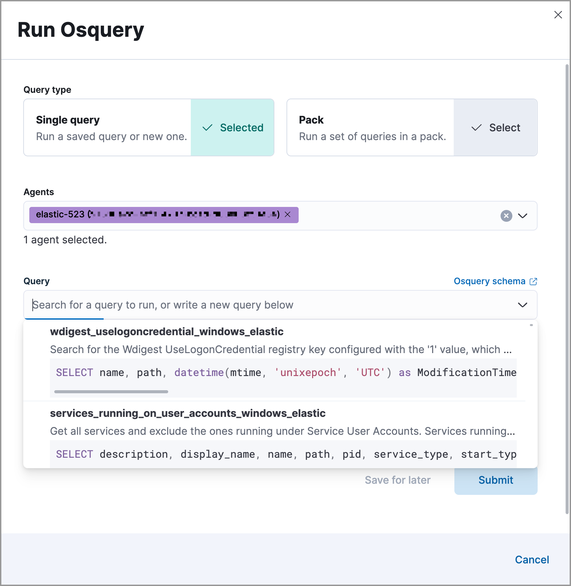

Run Osquery from alerts
edit[preview] This functionality is in technical preview and may be changed or removed in a future release. Elastic will work to fix any issues, but features in technical preview are not subject to the support SLA of official GA features.
Run live queries on hosts associated with alerts to learn more about your infrastructure and operating systems. For example, with Osquery, you can search your system for indicators of compromise that might have contributed to the alert. You can then use this data to inform your investigation and alert triage efforts.
Requirements
- The Osquery manager integration must be installed.
-
Elastic Agent’s status must be
Healthy. Refer to Fleet Troubleshooting if it isn’t. - You must have the appropriate user role to use this feature.
To run Osquery from an alert:
-
Do one of the following from the Alerts table:
- Click the View details button to open the Alert details flyout, then click Take action → Run Osquery.
-
Select the More actions menu (
 ), then select Run Osquery.
), then select Run Osquery.
- Choose to run a single query or a query pack.
-
Select one or more Elastic Agents or groups to query. Start typing in the search field to get suggestions for Elastic Agents by name, ID, platform, and policy.
The host associated with the alert is automatically selected. You can specify additional hosts to query.
-
Specify the query or pack to run:
-
Query: Select a saved query or enter a new one in the text box. After you enter the query, you can expand the Advanced section to set a timeout period for the query, and view or set mapped ECS fields included in the results from the live query (optional).
Overwriting the query’s default timeout period allows you to support queries that take longer to run. The default and minimum supported value for the Timeout field is
60. The maximum supported value is900.Use placeholder fields to dynamically add existing alert data to your query.
-
Pack: Select from available query packs. After you select a pack, all of the queries in the pack are displayed.
Refer to prebuilt packs to learn about using and managing Elastic prebuilt packs.

-
-
Click Submit. Query results will display within the flyout.
Refer to Examine Osquery results for more information about query results.
- Click Save for later to save the query for future use (optional).